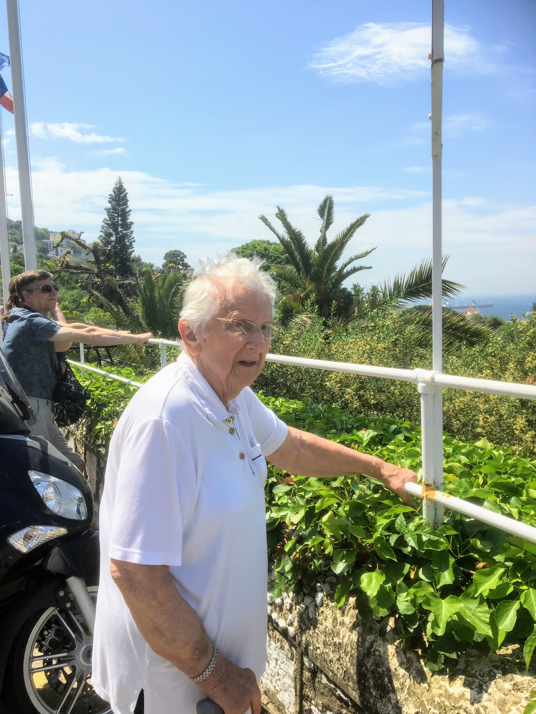

Britannia Cruise 2018
Tuesday May 8th 2018

Final destination on this cruise was Gibraltar, and Mum and I went on a booked excursion together. The walk
to the minibus was almost too much for Mum, but she made it. Our minibus driver took to Mum instantly. I think she reminded him of his Mum
who had died not so long ago. He helped her in and out of the bus, and when she stayed on board, he stayed with her and chatted, in fairly
broken English. I'm not sure how much she understood, what with being deaf and dreadful with accents, but sh enjoyed his company and I
didn't feel too bad leaving her with him.
It was a good excursion covering the whole of Gibraltar, which lets face it isn't difficult. It was a tad pricey though. It has to be done in
a minibus rather than a bus proper, because of the road tunnels. Gibraltar is
riddled with tunnels, constructed principally by the British Army over a period of nearly 200 years. Two of the post-war tunnels,
Keightley Way and Dudley Ward Way, are open to civilian vehicle traffic to facilitate journeys between the west and south of Gibraltar,
and along the precipitous east coast of the peninsula.
First stop was at Europa Point, the southernmost point of Gibraltar. There are quite a few things of interest here. First off, there is
The Europa Point Lighthouse. It was fully automated in February 1994 and its loom can be seen over a distance of 27 km (17 mi). It is
the southernmost lighthouse for which Trinity House is responsible, and the only one outside the UK.
Next there's Harding's battery, which was built on the remains of the 7th Europa Battery in 1859. At that time Europa Point was known as
Harding's Point. Harding's battery had been abandoned and buried under a mound of sand for years, but it was unearthed and refurbished
as part of a makeover of the whole of the Europa point area. In 2013 the restoration was made complete when a 12.5 inch RML gun, found
half buried at the southern entrance to Gibdock, dating from the 1870s and identical to the battery's original gun, was installed
on a replica carriage.
Then there's The Ibrahim-al-Ibrahim Mosque, also known as the King Fahd bin Abdulaziz al-Saud Mosque. The building was a gift from
King Fahd of Saudi Arabia in 1997. It is the southernmost mosque in continental Europe, and is one of the largest mosques in
a non-Muslim country.
Finally, there is the Sikorski Memorial. During WWII, Wladyslaw Eugeniusz
Sikorski was Prime Minister of the Polish government-in-exile, and Commander-in-Chief of the Polish Armed Forces. In July 1943, a
plane carrying Sikorski plunged into the sea immediately after takeoff from Gibraltar, killing all on board except the pilot. The crash
remains controversial.